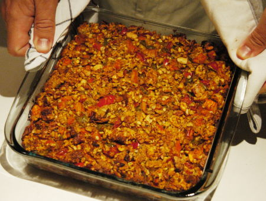

| Zutaten: | |
| 2 | mittlere Zwiebeln |
| 1 | Peperoni |
| Bratfett | |
| 225 g | gemischte Nüsse |
| 85 g | Brotkrumen |
| 2 | Knoblauchzehen |
| 1 El | gehackte Kräuter |
| 1 Tl | Currypulver |
| 425 g | Pelati |
| Salz und Pfeffer | |
| 1 | Ei |
Zwiebeln fein schneiden
Peperoni würfeln
Nüsse zerkleinern
Brot zerkleinern
Knoblauch schälen
Falls frische Tomaten zur Anwendung kommen: schälen und in kleine Würfel schneiden
Ei verquirlen
Ofenform fetten
Ofen auf 220°C vorheizen
Vorbereiten: 20 Minuten, Backzeit: 40 Minuten
Die Zwiebeln weich dünsten.
Peperoni zugeben und ein paar Minuten mitdämpfen
Nüsse dazu geben sowie die Brotkrumen, den gepressten Knoblauch, das Currypulver und die Kräuter. Tomaten beigeben und mit Salz und Pfeffer abschmecken.
Das Ei dazu mischen und das ganze in der Ofenform bei 220°C backen bis es eine goldige Farbe annimmt.
Heiss opder Kalt servieren
Ein Salat passt gut dazu.
Kann auch eingefroren werden.
Bath Calendar
Very nice but quite filling, RE 12.3.2000. Done again on 9.3.2004 Turned out very nicely. I exaggerated the ingredients a little because we had 5 people. It could have done with some more Tomatoes and more egg to bind.
@LINKBACK_TAG@ @WAKELOCK@